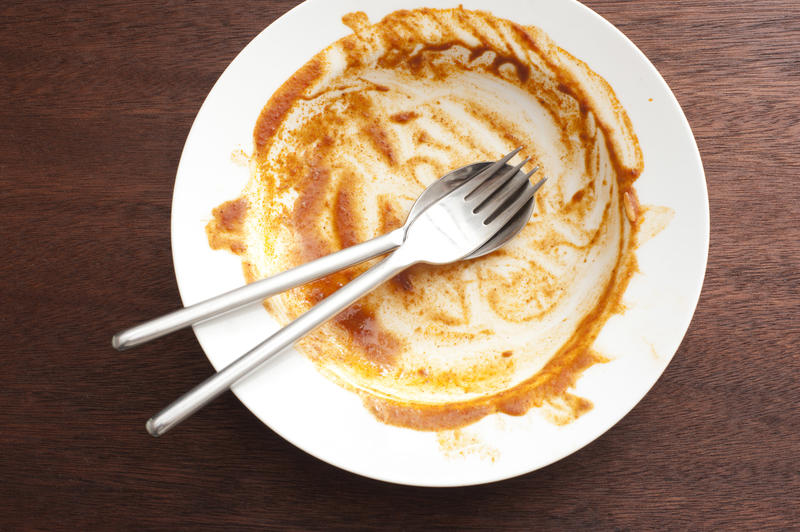

Lasagna

Description
lasagna, pasta dish of Italian origin, made with broad often ruffled
noodles and a tomato or white sauce
Ingredients
- 2 teaspoons extra virgin olive oil
- 71 pound ground beef chuck
- 1/2 medium onion, diced (about 3/4 cup)
-
1/2 large bell pepper (green, red, or yellow), diced (about 3/4 cup)
- 2 cloves garlic, minced
Steps
-
Start by making the sauce with ground beef, bell peppers, onions, and a
combo of tomato sauce, tomato paste, and crushed tomatoes. The three
kinds of tomatoes gives the sauce great depth of flavor.
-
Let this simmer while you boil the noodles and get the cheeses ready.
We're using ricotta, shredded mozzarella, and parmesan—like the mix of
tomatoes, this 3-cheese blend gives the lasagna great flavor!
-
From there, it's just an assembly job. A cup of meat sauce, a layer of
noodles, more sauce, followed by a layer of cheese. Repeat until you
have three layers and have used up all the ingredients.
- Bake until bubbly and you're ready to eat!
Home